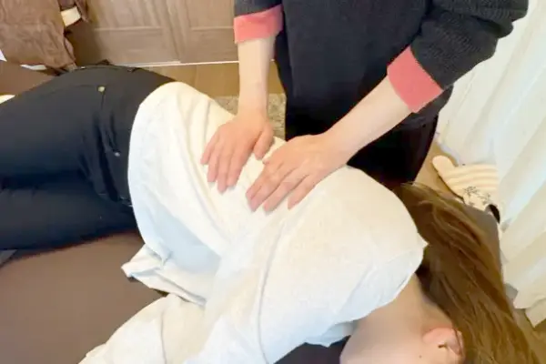
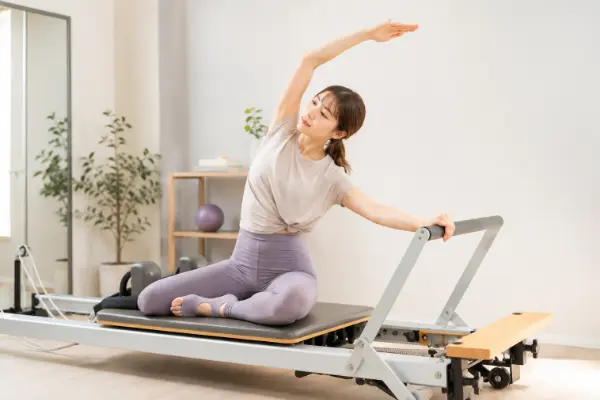

股関節や胸椎の動きに変化が見られ、伸展動作がしやすくなった印象です。
背中全体が伸びやすくなり、動きにも変化が見られました。
いくつからでも、
自分史上最高の身体へ
踊りやすさは身体の土台から。
頑張るだけの練習から、
動ける身体づくりへ。
姿勢・動作・感覚・発達など
多角的な視点で、
一人ひとりをサポートします。
一回の施術・セッションで見られた
身体の変化の一例です。
変化の現れ方、感じ方には個人差があります。
股関節や胸椎の動きに変化が見られ、伸展動作がしやすくなった印象です。
背中全体が伸びやすくなり、動きにも変化が見られました。

脚が上げやすくなったように見え、股関節の外旋動作もスムーズに感じられました。
軸脚の安定感が出てきた様子で立位姿勢も変化が見られます。

反射の統合ワーク後に姿勢や頭の位置に変化が見られ、その後ダンサー整体で股関節〜足にアプローチ。
あぐらの取りやすさや、姿勢にもさらなる変化が見られました。
後日、「首元のシワが目立ちにくくなった」
「顎関節の違和感が以前より気になりにくくなった」とのご感想をいただいています。
身体は「整える」だけじゃない。
動きや、身体からのサインにも目を向けます。


渋谷・恵比寿・横浜から、ご都合のよいエリアをお選びいただけます。
ご予約内容に合わせて、各エリアのレンタルサロン・スタジオにて実施します。
渋谷駅・恵比寿駅・横浜駅から徒歩圏内の会場です。
会場住所などの詳細は、ご予約時にお知らせします。
「今の体の状態で受けて大丈夫か不安」
「体を変えたいけれど、何から始めればいいか分からない」
そんな段階でもお気軽にご相談ください。
渋谷・恵比寿・横浜エリアでセッションを行っています。
ご予約はWebフォームまたは公式LINEより受け付けています。
InstagramのDMからもお問い合わせいただけます。